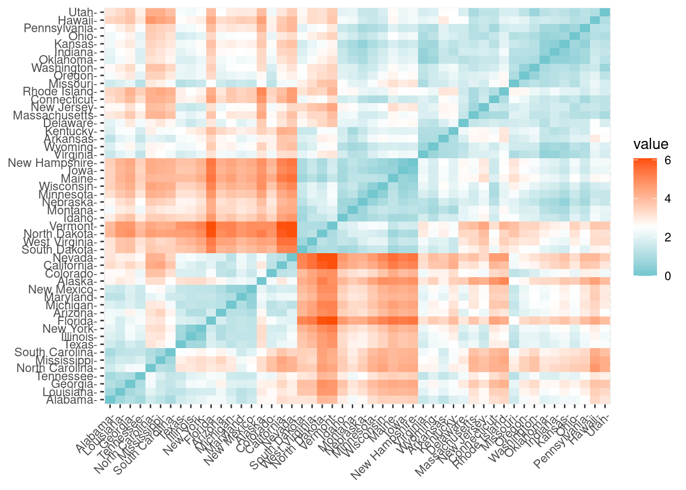
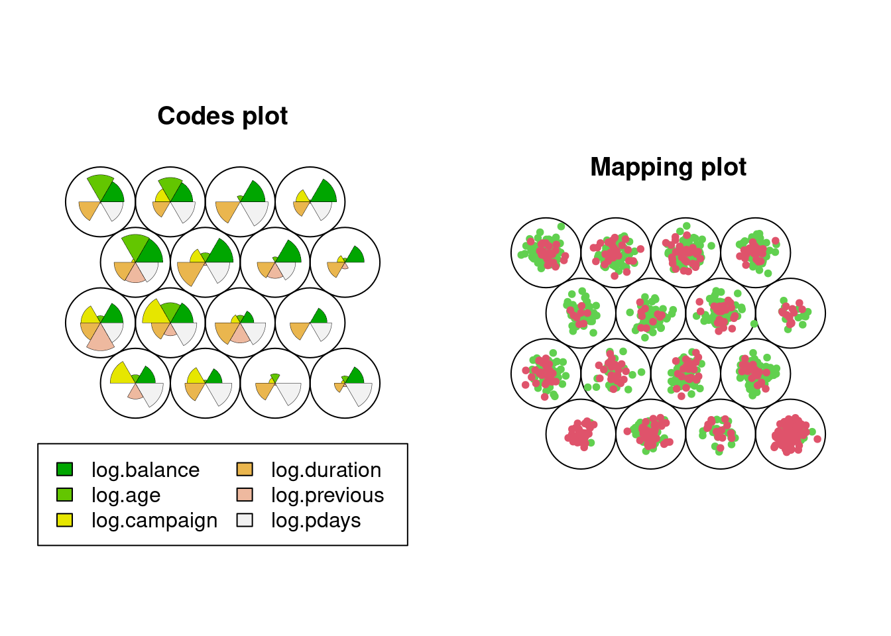

Los modelos de aprendizaje no supervisado aparecen cuando no se dispone de una etiqueta sobre los datos en contraposición al aprendizaje supervisado donde sí existe dicha etiqueta (ver Capítulo 1). Por lo tanto, en aprendizaje no supervisado no hay clases que aprender. En este caso el objetivo de estos modelos no será construir un modelo de clasificación capaz de separar las observaciones según unas clases predeterminadas.
Importante
El objetivo de los algoritmos de agrupamiento es particionar el conjunto de datos en grupos de observaciones, donde cada observación se parezca lo más posible a las otras observaciones de su mismo grupo y lo menos posible a las otras observaciones de los otros grupos.
Estos grupos reciben el nombre de conglomerados o clústeres.
La idea fundamental de los algoritmos de agrupamiento es que los puntos dentro de un mismo clúster sean muy similares (respecto a alguna medida de similitud) y que los puntos en diferentes clústeres sean diferentes.
Las técnicas de agrupamiento se emplean para segmentación del mercado, para visualización, para la detección de anomalías, para la imputación de valores faltantes, para la compresión de datos, etc. Los algoritmos de agrupamiento permiten obtener una visión de la complejidad de la tarea de clasificación.
Precaución
En ocasiones se recomienda comenzar el sistema de ML con un algoritmo de agrupamiento, incluso cuando tengamos etiquetas y el problema pudiera plantearse como un problema de aprendizaje supervisado.
Podéis encontrar una amplia revisión de los algoritmos de agrupamiento en (Xu y Tian 2015), siendo los más conocidos:
los basados en centroides, como por ejemplo el algoritmo de las k-medias
los basados en conectividad, como por ejemplo el agrupamiento jerárquico
los basados en densidad, siendo el más conocido de todos el algoritmo DBSCAN.
En ocasiones los algoritmos de agrupamiento se clasifican en agrupamiento jerárquico y agrupamiento no jerárquico.
Agrupamiento jerárquico
El agrupamiento jerárquico tiene la particularidad de que encuentra grupos anidados de clústeres. Es decir, cuando una observación forma parte de un clúster, no lo abandona, pudiéndose unir el clúster a otros clústeres en etapas posteriores.
Agrupamiento no jerárquico
Por contra, el agrupamiento no jerárquico genera una clasificación mediante la partición del conjunto de datos, obteniendo un conjunto de clústeres no superpuestos que no tienen relaciones jerárquicas entre sí.
El agrupamiento puede ser una herramienta muy útil para el análisis de datos en un entorno no supervisado. Sin embargo, hay una serie de problemas que surgen al realizar el clustering. En este tema del curso vamos a repasar algunas de las propiedades y algunos de los problemas del clustering.
5.1 Parámetros de un modelo de ML
Un parámetro es un valor que el algoritmo del modelo de ML ajusta durante el proceso de entrenamiento para hacer que el modelo se adapte mejor a los datos de entrenamiento y, en última instancia, haga predicciones más precisas en datos no vistos (datos de prueba o datos en producción). Los parámetros son esenciales para definir la estructura y el comportamiento del modelo.
En ocasiones se diferencia entre dos tipos de parámetros en un modelo de ML:
Parámetros del modelo
Estos son los componentes internos del modelo que definen su estructura y su capacidad para representar relaciones en los datos. Por ejemplo, en una red neuronal, los pesos y sesgos en las capas de neuronas son parámetros del modelo. En una regresión lineal, los coeficientes son parámetros del modelo.
Hiperpárametros del modelo
A diferencia de los parámetros del modelo, los hiperparámetros son valores que se establecen antes del proceso de entrenamiento y controlan aspectos más generales del modelo. Ejemplos de hiperparámetros incluyen la tasa de aprendizaje, la cantidad de capas ocultas en una red neuronal, el valor \(k\) en el modelo de \(k\) vecinos, la profundidad de un árbol de decisión, etc. Los hiperparámetros afectan cómo se ajustan los parámetros del modelo durante el entrenamiento.
El proceso de ajuste de parámetros y hiperparámetros se realiza mediante la iteración y la experimentación para encontrar la combinación adecuada que permita al modelo aprender de manera efectiva y generalizar bien a datos nuevos. Esto se conoce como ajuste de hiperparámetros o búsqueda de hiperparámetros y es una parte crítica del desarrollo de modelos exitosos de ML.
5.2\(k\)-medias
El algoritmo de las \(k\) medias es el algoritmo de ML no supervisado más utilizado para agrupar un conjunto de observaciones en un conjunto de \(k\) grupos o clústeres, donde \(k\) representa el número de grupos pre-especificados por el científico de datos. Diremos que \(k\) es un valor del modelo de ML y que su valor ha de ser fijado (o aprendido) a lo largo del proceso de aprendizaje.
La idea básica consiste en definir clústeres de manera que se reduzca al máximo la variabilidad total dentro del clúster (llamada within-cluster variation):
Existen varios algoritmos para entrenar un modelo de \(k\)-medias. El algoritmo original puede encontrarse en (Hartigan y Wong 1979), y define la variabilidad total dentro del clúster como la suma de distancias Euclídeas al cuadrado entre las observaciones y el correspondiente centroide.
El algoritmo comienza con \(k\) medias seleccionadas aleatoriamente del conjunto original de observaciones.
Precaución
No siempre se tiene información sobre qué valor es el óptimo para el parámetro \(k\) en el modelo de las \(k\)-medias. De hecho, en ocasiones el interés de los métodos de agrupamiento es precisamente averiguar dicho valor.
El algoritmo continúa asignando los registros de la base de datos al clúster con media más cercana. Es decir, para cada observación se busca su centroide más cercano dentro del conjunto de centrioides disponibles.
Una vez que todas las observaciones han sido agrupadas de acuerdo a su centroide más cercano, se recalculan los centroides de los \(k\) clústeres.
Se iteran estos dos últimos pasos hasta la convergencia de los centroides. Esto es, hasta que el valor de los centroides apenas se modifica (según un criterio de parada preestablecido, esto es, otro hiperparámetro).
Despliega los paneles siguientes para averiguar las principales ventajas y desventajas de este modelo de ML.
Ventajas
Las principales ventajas del algoritmo de las \(k\)-medias son su sencillez y su escalabilidad (aplicable con facilidad a grandes conjuntos de datos).
Desventajas
Las principales desventajas son la necesidad de elegir \(k\) manualmente y la alta dependencia de los valores iniciales, las medias con las que comienza el algoritmo. Para evitar esta última desventaja se suele replicar el algoritmo varias veces con distintas inicializaciones. Además, los centroides pueden verse fuertemente influidos por valores atípicos.
Para solventar esta última desventaja, en ocasiones, se usan de medoides en lugar de centroides. Estos medoides, al contrario de los centroides, son obligatoriamente observaciones de la muestra. Es decir, no elegimos medias aleatorias, sino observaciones reales recogidas en la base de datos.
El más común de los algoritmos de \(k\)-medoides es el PAM: “Partitioning Around Medoids”. Una ventaja adicional de los algoritmos basados en medoides es la interpretabilidad de los resultados. Mientras que un centroide puede no tener significado dentro de las observaciones muestrales, un medoide lo tiene por definición.
Estos algoritmos son no-jerárquicos, pues una observación puede cambiar de clúster durante la ejecución del mismo. Dos observaciones cualesquiera pueden pertenecer al mismo o a diferente grupo en diferentes iteraciones del algoritmo.
5.2.1\(k\)-medias en R
Para ver cómo funciona el algoritmo de las \(k\) medias en R, vamos a emplear los datos de arrestos en USA, vistos en etapas anteriores del curso:
En primer lugar vamos a calcular la distancia Euclídea entre las observaciones de la base de datos. En R es sencillo calcular y visualizar la matriz de distancias utilizando las funciones get_dist y fviz_dist del paquete factoextra de R. La matriz de distancias se muestra a continuación. Esto empieza a ilustrar qué estados tienen grandes disimilitudes (rojo) frente a los que parecen ser bastante similares (verde azulado).
distance <-get_dist(df)fviz_dist(distance, gradient =list(low ="#00AFBB", mid ="white", high ="#FC4E07"))

Podemos aplicar el algoritmo de las \(k\)-medias con \(k=2\) sin más que llamar a la función kmeans tal y como sigue:
k2 <-kmeans(df, centers =2, nstart =25)str(k2)
List of 9
$ cluster : Named int [1:50] 2 2 2 1 2 2 1 1 2 2 ...
..- attr(*, "names")= chr [1:50] "Alabama" "Alaska" "Arizona" "Arkansas" ...
$ centers : num [1:2, 1:4] -0.67 1.005 -0.676 1.014 -0.132 ...
..- attr(*, "dimnames")=List of 2
.. ..$ : chr [1:2] "1" "2"
.. ..$ : chr [1:4] "Murder" "Assault" "UrbanPop" "Rape"
$ totss : num 196
$ withinss : num [1:2] 56.1 46.7
$ tot.withinss: num 103
$ betweenss : num 93.1
$ size : int [1:2] 30 20
$ iter : int 1
$ ifault : int 0
- attr(*, "class")= chr "kmeans"
Tarea
¿Qué significa nstart=25 en la anterior llamada a kmeans?
Si imprimimos los resultados veremos que la técnica de agrupaciones dió lugar a \(2\) conglomerados de \(30\) y \(20\) observaciones cada uno. Vemos los centros de los conglomerados (medias) para los dos grupos en las cuatro variables (Murder, Assault, UrbanPop, Rape). También obtenemos la asignación de conglomerados para cada observación (es decir, Alabama se asignó al conglomerado \(2\), Arkansas se asignó al conglomerado \(1\), etc.).
k2
K-means clustering with 2 clusters of sizes 30, 20
Cluster means:
Murder Assault UrbanPop Rape
1 -0.669956 -0.6758849 -0.1317235 -0.5646433
2 1.004934 1.0138274 0.1975853 0.8469650
Clustering vector:
Alabama Alaska Arizona Arkansas California
2 2 2 1 2
Colorado Connecticut Delaware Florida Georgia
2 1 1 2 2
Hawaii Idaho Illinois Indiana Iowa
1 1 2 1 1
Kansas Kentucky Louisiana Maine Maryland
1 1 2 1 2
Massachusetts Michigan Minnesota Mississippi Missouri
1 2 1 2 2
Montana Nebraska Nevada New Hampshire New Jersey
1 1 2 1 1
New Mexico New York North Carolina North Dakota Ohio
2 2 2 1 1
Oklahoma Oregon Pennsylvania Rhode Island South Carolina
1 1 1 1 2
South Dakota Tennessee Texas Utah Vermont
1 2 2 1 1
Virginia Washington West Virginia Wisconsin Wyoming
1 1 1 1 1
Within cluster sum of squares by cluster:
[1] 56.11445 46.74796
(between_SS / total_SS = 47.5 %)
Available components:
[1] "cluster" "centers" "totss" "withinss" "tot.withinss"
[6] "betweenss" "size" "iter" "ifault"
También podemos ver nuestros resultados utilizando fviz_cluster. Esto proporciona una buena visualización de los clusters. Si hay más de dos dimensiones (variables) fviz_cluster realizará un análisis de componentes principales (ver Capítulo 4) y trazará los puntos de datos de acuerdo con los dos primeros componentes principales que explican la mayor parte de la varianza.
fviz_cluster(k2, data = df)
Tarea
¿Qué información estamos perdiendo al representar únicamente dos dimensiones del conjunto de datos? (Repasar el capítulo Capítulo 4)
5.2.2 Número óptimo de clústeres
Como hemos comentado anteriormente, en numerosas ocasiones el número óptimo de clústeres de un problema no supervisado lo establece el dominio de aplicación, o más concretamente nuestra necesidad de comunicar los resultados y que estos tengan sentido y sean lo más explicables posibles.
Nombrar los grupos
Nombrar los clusters en un análisis no supervisado es fundamental para dar significado a los resultados, comunicar eficazmente las conclusiones y facilitar la toma de decisiones informadas.
A continuación mostramos los tres métodos más populares para determinar el número óptimo de clústeres: método del codo , silhoutte y método estadístico de la brecha (Gap).
Método del codo
Recordemos que la idea básica de los métodos de división en clústeres, como \(k\)-medias, es definir los clústeres de manera que se reduzca al mínimo la variación total dentro de los clústeres. Podemos calcular este valor de variación total para diferentes elecciones de \(k\) y graficar dichos valores. La ubicación de un cambio de pendiente abrupto (un codo) en la figura se considera generalmente como un indicador del número apropiado de grupos. Veamos un ejemplo en R.
En este caso parece que \(4\) es una buena elección para el número óptimo de clusters. De modo qué:
k4 <-kmeans(df, centers =4, nstart =25)fviz_cluster(k4, data = df)
Método de la silueta
Podemos emplear otras técnicas (no supervisadas) para valorar la coherencia, o calidad, de los resultados de un algoritmo de agrupamiento. Silhouette es una de estas técnicas. El enfoque de la silueta media mide la calidad de una agrupación. Es decir, determina hasta qué punto cada observación se encuentra, correctamente ubicada, dentro de su agrupación. Una anchura de silueta media elevada indica una buena agrupación. El método de la silueta media calcula la silueta media de las observaciones para distintos valores de \(k\). El número óptimo de conglomerados \(k\) es el que maximiza la silueta media en un rango de posibles valores de \(k\). Para cada observación \(x_i\) de la base de datos calculamos la siguiente expresión:
donde \(a(x_i)\) es la media de las distancias de la observación \(x_i\) a los puntos en su propio clúster, \(b(x_i)\) es la media de las distancias de \(x_i\) a los puntos en su cluster más cercano (excluyendo el suyo propio). La interpretación es muy sencilla: las observaciones que “encajan” bien en el cluster al que pertenecen tienen valores altos, mientras que las observaciones que “no encajan” bien en el clúster al que han sido asignadas tienen valores pequeños o incluso negativos.
Es posible realizar análisis de agrupamiento con diferente número de clústeres y comparar en cada uno de esos análisis los valores de Silhoutte obtenidos.
fviz_nbclust(df, kmeans, method ="silhouette")
Con esta técnica, en nuestros datos de ejemplo, parece ser que la mejor elección es \(k\) igual a \(2\).
La interpretación del coeficiente de silueta es la siguiente: Un valor positivo significa que la observación está bien agrupada. Cuanto más se acerque el coeficiente a \(1\), mejor agrupada está la observación. Por contra, un valor negativo significa que la observación está mal agrupada. Finalmente, un valor igual a \(0\) significa que la observación se encuentra entre dos conglomerados.
El gráfico de siluetas anterior y el coeficiente de silueta medio ayudan a determinar si la agrupación es buena o no. Si una gran mayoría de los coeficientes de silueta son positivos, significa que las observaciones están situadas en el grupo correcto.
Gap
El Método Gap es útil porque ofrece una forma objetiva de determinar el número de clusters sin depender de suposiciones subjetivas. Al comparar los resultados del clustering real con datos de referencia aleatorios, ayuda a evitar la sobreelección o subelección de clusters y permite tomar decisiones más informadas sobre la estructura de los datos.
El proceso es el siguiente:
Se aplica el algoritmo de clustering (por ejemplo, K-Means) a los datos con diferentes valores de \(k\), que representan el número de clusters que se desea evaluar. Se genera un conjunto de resultados de clustering para cada valor de \(k\).
Se generan conjuntos de datos de referencia aleatorios (datos simulados) con la misma estructura y variabilidad que los datos reales, pero sin patrones de clustering. Estos datos aleatorios se utilizan como referencia para evaluar la calidad de los clusters obtenidos en el paso anterior.
Se calcula el estadístico Gap para cada valor de \(k\). Este estadístico compara la dispersión de los datos reales con la dispersión de los datos aleatorios generados. Cuanto más grande sea la brecha entre estas dos dispersiones, más sólido es el clustering para ese valor de \(k\). El estadístico se calcula como la diferencia entre el logaritmo de la dispersión intra-cluster de los datos reales y el logaritmo de la dispersión intra-cluster de los datos de referencia.
Selección del Número Óptimo de Clusters: El valor de \(k\) que maximiza el estadístico anterior se considera el número óptimo de clusters. En otras palabras, se elige el valor de \(k\) donde la brecha entre los datos reales y los datos de referencia es más grande.
Existe una función en R que realiza todo este proceso. En los datos de ejemplo:
set.seed(123)gap_stat <-clusGap(df, FUN = kmeans, nstart =25,K.max =10, B =50)print(gap_stat, method ="firstmax")
Aparéntemente \(3\) es el número óptimo de clusters.
k3 <-kmeans(df, centers =3, nstart =25)fviz_cluster(k3, data = df)
Tarea
El paquete NbClust proporciona 30 (treinta!!!) índices para determinar el número relevante de clústeres y propone a los usuarios el mejor esquema de agrupación a partir de los diferentes resultados obtenidos variando todas las combinaciones de número de clústeres, medidas de distancia y métodos de agrupación. ¡Pruébalo!
*** : The Hubert index is a graphical method of determining the number of clusters.
In the plot of Hubert index, we seek a significant knee that corresponds to a
significant increase of the value of the measure i.e the significant peak in Hubert
index second differences plot.
*** : The D index is a graphical method of determining the number of clusters.
In the plot of D index, we seek a significant knee (the significant peak in Dindex
second differences plot) that corresponds to a significant increase of the value of
the measure.
*******************************************************************
* Among all indices:
* 11 proposed 2 as the best number of clusters
* 2 proposed 3 as the best number of clusters
* 1 proposed 4 as the best number of clusters
* 1 proposed 5 as the best number of clusters
* 7 proposed 6 as the best number of clusters
* 1 proposed 9 as the best number of clusters
* 1 proposed 10 as the best number of clusters
***** Conclusion *****
* According to the majority rule, the best number of clusters is 2
*******************************************************************
# Method Agreement Procedure:
The choice of 2 clusters is supported by 13 (43.33%) methods out of 30 (Elbow, Silhouette, Gap_Maechler2012, Ch, CCC, Duda, Pseudot2, Beale, Ratkowsky, PtBiserial, Mcclain, Dunn, SDindex).
plot(n_clust)
Creemos que te ha quedado claro que no existe una regla única para la elección del número óptimo de clústeres. Al contrario, hay muchos métodos para estimar el mejor número de clústeres y, obviamente, no todos ellos dan el mismo resultado. Se recomienda considerar los resultados de diferentes métodos y explorar varios números de clústeres buscando siempre una coherente interpretación de los resultados.
En el ejemplo, eligiendo \(4\) (quizás no sea la elección más evidente, pero ¿será interpretable?) como el número de clusters, podemos obtener los resultados finales tratando de nombrar los clusters:
Intenta “nombrar” los \(4\) clusters del ejemplo. Para ello deberías fijarte también en las componentes principales.
5.3 Cluster Jerárquico
Las técnicas de agrupamiento jerárquico generan una clasificación iterativa de clústeres anidados mediante la unión o la separación de clústeres creados en etapas anteriores. Existen dos alternativas posibles:
Aglomerativos: en la versión aglomerativa, cada observación comienza siendo un clúster, y en cada iteración se unen en un único clúster los dos clústeres más similares, hasta alcanzar una situación final en la que todos las observaciones pertenecen a un único clúster. Esta versión se conoce como AGNES (“Agglomerative Nesting”).
Divisivos: en la versión divisiva, todas las observaciones comienzan en un único clúster y las divisiones se realizan de forma recursiva, a medida que se desciende en la jerarquía, terminando cada observación formando un único clúster individual. Esta versión se conoce como DIANA (“Divise Analysis”).
Se necesita un criterio de conexión o “linkage” que especifique cómo se determina el parecido (o la disimilitud) entre dos clústeres. Este criterio no es único. Algunos de los criterios más comunes son:
Método de Ward
Minimiza la suma de las diferencias cuadradas dentro de los clústeres. Minimiza la varianza total dentro del conglomerado.
Agrupamiento de enlace completo
Minimiza la disimilitud máxima entre las observaciones de dos clústeres. Calcula todas las disimilitudes por pares entre los elementos del conglomerado A y los elementos del conglomerado B, y considera el mayor valor (es decir, el valor máximo) de estas disimilitudes como la distancia entre los dos conglomerados. Tiende a producir clusters más compactos.
Agrupamiento de enlace promedio
Minimiza el promedio de las disimilitudes entre las observaciones de dos clústeres. Calcula todas las disimilitudes por pares entre los elementos del conglomerado A y los elementos del conglomerado B, y considera la media de estas disimilitudes como la distancia entre los dos conglomerados.
Agrupamiento de enlace mínimo o simple
Minimiza las disimilitudes entre las observaciones más cercanas de dos clústeres. Es decir, calcula todas las disimilitudes por pares entre los elementos del conglomerado A y los elementos del conglomerado B, y considera la menor de estas disimilitudes como criterio de vinculación. Tiende a producir clusters largos y “dispersos”.
Agrupamiento de enlace de centroides
Calcula la disimilitud entre el centroide del conglomerado A y el centroide del conglomerado B. Agrupación de enlace de centroides.
Importante
El criterio de agrupación o conexión es un parámetro fundamental en el resultado final del clustering jerárquico.
5.3.1 Cluster jerárquico en R
Existen diferentes funciones disponibles en R para calcular el clustering jerárquico. Las funciones más utilizadas son:
hclust [en el paquete stats] y agnes [en el paquete cluster] para el clustering jerárquico aglomerativo
diana [en el paquete cluster] para clustering jerárquico divisivo
El coeficiente aglomerativo mide la cantidad de estructura de agrupamiento encontrada (los valores más cercanos a \(1\) sugieren una fuerte estructura de agrupamiento).
Esto nos permite encontrar ciertos métodos de clustering jerárquico que pueden identificar estructuras de agrupación más fuertes. Aquí vemos que el método de Ward identifica la estructura de agrupación más fuerte de los cuatro métodos evaluados.
# Métodos evaluadosm <-c( "average", "single", "complete", "ward")names(m) <-c( "average", "single", "complete", "ward")# Función para calcular el coeficiente de agrupamientoac <-function(x) {agnes(df, method = x)$ac}map_dbl(m, ac)
average single complete ward
0.7379371 0.6276128 0.8531583 0.9346210
En ocasiones se emplea una representación gráfica en forma de árbol llamada dendrograma que ilustra las agrupaciones derivadas de la aplicación de una técnica de agrupamiento jerárquico. En el eje de ordenadas se presenta la distancia a la que se unen los diferentes clústeres. Las observaciones aparecen en el eje de abscisas.
Fíjate cómo obtenemos diferentes resultados según el método propuesto.
hc2 <-agnes(df, method ="ward" )# Drendrogramapltree(hc2, cex =0.6, hang =-1, main ="Dendrograma de AGNES")
La pregunta a la que nos enfrentamos es a qué distancia cortar el dendrograma, es decir, dónde dibujar una línea horizontal que determine el número óptimo de clústeres. Por ejemplo, en nuestro caso, cortar en \(10\) generaría dos clústeres. Sin embargo, cortar en \(5\) generaría cuatro clústeres, dos a la izquierda, dos a la derecha.
A continuación aplicamos el método divisivo.
# Clustering jerárquico divisivohc4 <-diana(df)# Coeficiente de división; cantidad de estructura de agrupación encontradahc4$dc
[1] 0.8514345
## [1] 0.8514345# Drendrogramapltree(hc4, cex =0.6, hang =-1, main ="Dendrogram de DIANA")
En el dendrograma anterior, cada hoja corresponde a una observación. A medida que ascendemos en el árbol, las observaciones que son similares entre sí se combinan en ramas, que a su vez se fusionan a mayor altura.
La altura de la fusión, que figura en el eje vertical, indica la (di)similitud entre dos observaciones. Cuanto mayor es la altura de la fusión, menos similares son las observaciones.
Precaución
Cuando empleamos un dendrograma, las conclusiones sobre la proximidad de dos observaciones sólo pueden extraerse a partir de la altura a la que se fusionan las ramas que contienen primero esas dos observaciones. No podemos utilizar la proximidad de dos observaciones a lo largo del eje horizontal como criterio de su similitud.
Tal como hemos indicado, la altura del corte del dendrograma controla el número de clusters obtenidos. Desempeña el mismo papel que la \(k\) en la agrupación \(k\)-means. Para identificar subgrupos (es decir, clusters), podemos cortar el dendrograma con la función cutree de R:
# Método de Wardhc5 <-hclust(d, method ="ward.D2" )# Cortamos en 4 clusterssub_grp <-cutree(hc5, k =4)# Visualizamos el corte en el dendrogramaplot(hc5, cex =0.6)rect.hclust(hc5, k =4, border =2:5)
# Número de observaciones en cada clustertable(sub_grp)
Podemos ir un paso más allá y comparar dos dendrogramas. En este ejemplo comparamos los resultados obtenidos con el método de “Ward” frente al “completo”.
library(dendextend)# Matriz de distanciasres.dist <-dist(df, method ="euclidean")# Calcuamos los dos clustering jerárquicoshc1 <-hclust(res.dist, method ="complete")hc2 <-hclust(res.dist, method ="ward.D2")# Dendrogramasdend1 <-as.dendrogram (hc1)dend2 <-as.dendrogram (hc2)# los enfrentamostanglegram(dend1, dend2)
El resultado muestra nodos “únicos”, con una combinación de etiquetas/elementos no presentes en el otro árbol, resaltados con líneas discontinuas. La calidad de la alineación de los dos árboles puede medirse utilizando la función de entrelazamiento. El entrelazamiento es una medida entre \(1\) (entrelazamiento total) y \(0\) (sin entrelazamiento). Un coeficiente de entrelazamiento menor corresponde a una buena alineación.
dend_list <-dendlist(dend1, dend2)tanglegram(dend1, dend2,highlight_distinct_edges =FALSE, # Turn-off dashed linescommon_subtrees_color_lines =FALSE, # Turn-off line colorscommon_subtrees_color_branches =TRUE, # Color common branches main =paste("entanglement =", round(entanglement(dend_list), 2)) )
Tal y como hacíamos en el clustering no jerárquico, podemos aplicar métodos para determinar el número óptimo de clusters. Por ejemplo, el método del codo:
fviz_nbclust(df, FUN = hcut, method ="wss")
En el ejemplo propuesto, elegir \(4\) como número óptimo parece una buena elección. Sin embargo, y como pasaba en los métodos no jerárquicos, métodos alternativos pueden llevarnos a soluciones alternativas.
fviz_nbclust(df, FUN = hcut, method ="silhouette")
gap_stat <-clusGap(df, FUN = hcut, nstart =25, K.max =10, B =50)fviz_gap_stat(gap_stat)
Ventajas del clustering jerárquico
Jerarquía de Clusters: El clustering jerárquico crea una jerarquía de clusters que permite analizar los datos a diferentes niveles de granularidad. Es posible, por tanto, explorar tanto clusters globales como subgrupos más específicos. Al tener una jerarquía de clusters, puedes tomar decisiones a diferentes niveles de detalle. Esto es valioso para la segmentación de mercado, la taxonomía de especies, la organización de documentos, entre otros.
Interpretación Visual: El dendrograma facilita la interpretación visual de cómo se agrupan los datos y cómo se relacionan entre sí.
No Requiere Especificación Previa del Número de Clusters: A diferencia de algunos algoritmos de clustering que requieren que especifiques el número de clusters de antemano como \(k\)-medias, el clustering jerárquico no necesita esta información.
Identificación de Subgrupos: El clustering jerárquico es eficaz para la identificación de subgrupos dentro de clusters más grandes. Esto es útil en áreas como la segmentación de clientes, donde se pueden tener clusters generales y luego identificar subgrupos más específicos.
Detección de Outliers: El clustering jerárquico puede ayudar a identificar outliers (valores atípicos) que no se ajustan a ningún cluster específico y que pueden ser importantes en el análisis de datos.
No Sensible a la Inicialización: A diferencia de algunos algoritmos de clustering, como el \(k\)-means, el clustering jerárquico no es sensible a la inicialización de centroides, lo que puede ayudar a evitar soluciones subóptimas.
Análisis Exploratorio de Datos: El clustering jerárquico es útil en la exploración inicial de datos, ya que proporciona una visión general de cómo se agrupan naturalmente los datos sin la necesidad de conocimiento previo.
Desventajas del clustering jerárquico
Requiere definir un criterio de corte: Para convertir la jerarquía en clusters finales, es necesario definir un criterio de corte en el dendrograma. Esta elección puede ser subjetiva y afectar los resultados. Así mismo hay que definir el tipo de enlace a emplear (y la medida de disimilitud) Cada una de estas decisiones puede influir mucho en los resultados obtenidos. En la práctica, probamos varias opciones diferentes y buscamos la que ofrece la solución más útil o interpretable.
Con estos métodos, no hay una única respuesta correcta: debe considerarse cualquier solución que exponga algunos aspectos interesantes de los datos.
No es óptimo para todos los tipos de datos: El clustering jerárquico funciona mejor cuando los clusters tienen una estructura jerárquica natural. En algunos casos, donde no existe una jerarquía clara, otros métodos de clustering pueden ser más apropiados.
No es adecuado para datos de alta dimensión: El rendimiento del clustering jerárquico puede disminuir en conjuntos de datos de alta dimensión debido a la maldición de la dimensionalidad. Este fenómeno significa que al aumentar el número de dimensiones de un problema se pueden agravar muchos de los problemas que aparecen en dimensiones bajas (curse of dimensionality, Bellman y Kalaba (1961)).
No siempre produce resultados reproducibles: La estructura jerárquica resultante puede variar según la métrica de distancia y el enfoque de enlace utilizado, lo que puede dar lugar a resultados no siempre reproducibles.
Sin capacidad de predicción: Las técnicas de agrupamiento jerárquicas no son útiles a la hora de predecir el clúster al que pertenecen nuevas observaciones.
5.4 Mapas auto-organizados
Los Mapas Auto-organizados de Kohonen (SOM por sus siglas en inglés, “Self-Organizing Maps”) no solo son una poderosa herramienta para la reducción de la dimensión, sino que también son ampliamente utilizados como algoritmo de clustering. Aunque la reducción de la dimensión es una de sus aplicaciones más destacadas, los SOM también tienen la capacidad de agrupar datos de manera efectiva.
El proceso de clustering con SOM implica organizar datos en grupos o clusters de manera que los elementos dentro de un mismo grupo sean similares entre sí en función de ciertas características. Aquí se explica cómo los SOM se utilizan para esta tarea:
Inicialización: Se crea una red de nodos o neuronas en una estructura bidimensional, conocida como “mapa SOM”. Cada neurona representa una ubicación en el espacio SOM.
Asignación de Pesos: Cada neurona en el SOM tiene asociado un vector de pesos que es del mismo tamaño que los datos originales que se están analizando.
Entrenamiento: Se presentan los datos al SOM, y cada dato se asigna a la neurona cuyos pesos son más similares a los atributos del dato. Las neuronas ganadoras (aquellas a las que se asigna un dato) y sus vecinas en el mapa SOM se ajustan para que se parezcan más al dato presentado. Este proceso de aprendizaje se repite varias veces.
Agrupación en Clusters: Después del entrenamiento, las neuronas en el mapa SOM que están cerca una de la otra representan clusters de datos. Los datos que se asignaron a estas neuronas durante el entrenamiento se consideran miembros de un mismo cluster.
Ventajas
Topología Preservada: Una ventaja clave de los SOM en el clustering es que preservan la topología de los datos. Esto significa que los clusters en el SOM reflejan la estructura de vecindad en los datos originales, lo que facilita la interpretación de los resultados.
Escalabilidad: Los SOM pueden manejar grandes conjuntos de datos y dimensiones elevadas, lo que los hace útiles para aplicaciones del mundo real con datos complejos.
Flexibilidad: Los SOM pueden utilizarse con diversos algoritmos de agrupamiento, lo que permite adaptarlos a diferentes tipos de datos y objetivos de análisis.
Visualización: La representación en un espacio bidimensional o tridimensional facilita la visualización de datos complejos, lo que permite una comprensión más intuitiva.
Exploración Interactiva: Los SOM permiten la exploración interactiva de datos, ya que los usuarios pueden navegar por el mapa para inspeccionar las regiones y sus contenidos.
Reducción de Ruido: Los SOM a menudo ayudan a reducir el ruido y la redundancia en los datos, lo que mejora la calidad del análisis.
Desventajas
Sensibilidad a la Inicialización: Los SOM son sensibles a la inicialización de los pesos de las neuronas. Los resultados pueden variar significativamente según cómo se configuren los pesos iniciales, lo que significa que pueden converger a soluciones subóptimas si no se seleccionan adecuadamente los valores iniciales.
Determinación del Tamaño del Mapa: Elegir el tamaño adecuado para el mapa SOM puede ser un desafío. Si el mapa es demasiado pequeño, puede no capturar la estructura de los datos correctamente, mientras que si es demasiado grande, puede sobreajustarse a los datos y perder la capacidad de generalización.
Interpretación de los Resultados: La interpretación de los resultados de un SOM puede ser complicada, especialmente en mapas de alta dimensión. Mapear los clusters y las relaciones entre las neuronas en el mapa a menudo requiere conocimiento experto del dominio.
Requiere Ajuste de Hiperparámetros: El rendimiento de un SOM puede depender de la elección adecuada de hiperparámetros, como la tasa de aprendizaje, la vecindad de las neuronas y el número de iteraciones. En algunos casos, encontrar los valores óptimos puede ser un proceso de prueba y error.
Puede Converger a Mínimos Locales: Como con muchos algoritmos de optimización, los SOM pueden converger a mínimos locales en lugar del mínimo global, lo que puede llevar a soluciones subóptimas.
Requiere Grandes Conjuntos de Datos: Los SOM pueden no funcionar bien en conjuntos de datos pequeños o altamente desequilibrados, ya que su eficacia se basa en la capacidad de aprender patrones significativos a partir de una cantidad suficiente de datos.
Vamos a estudiar su implementación en R con la libraría kohonen.
library(kohonen)
Attaching package: 'kohonen'
The following object is masked from 'package:purrr':
map
SOM of size 4x4 with a hexagonal topology and a bubble neighbourhood function.
The number of data layers is 1.
Distance measure(s) used: sumofsquares.
Training data included: 1284 objects.
Mean distance to the closest unit in the map: 2.413.
par(mfrow =c(1,2))plot(df.som, type="codes")plot(df.som, type="mapping", col =as.numeric(as.factor(df$deposit))+1, pch=20)

# versión supervisada# kohmap <- xyf(as.matrix(df.st), as.factor(df$deposit),grid = somgrid(4, 4, "hexagonal"), rlen=100)#plot(kohmap, type="codes", main = c("Codes X", "Codes Y"))#plot(kohmap, type="mapping", col = as.numeric(as.factor(df$deposit))+1, pch=20)
Bellman, Richard, y Robert Kalaba. 1961. «Reduction of dimensionality, dynamic programming, and control processes».
Hartigan, John A, y Manchek A Wong. 1979. «Algorithm AS 136: A k-means clustering algorithm». Journal of the royal statistical society. series c (applied statistics) 28 (1): 100-108.
Xu, Dongkuan, y Yingjie Tian. 2015. «A comprehensive survey of clustering algorithms». Annals of Data Science 2: 165-93.